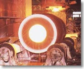
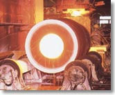

設備詳細
>> AOD精錬炉 >> 遠心鋳造機 >> クロッシングレール専用マシニングセンター >> 放射線透過装置

金型を回転させながら溶解金属を注入し、遠心力を利用して凝固させる鋳造法です。この製法により製造された製品には組織が緻密で有害欠陥が少ないという特徴があります。

>> AOD精錬炉 >> 遠心鋳造機 >> クロッシングレール専用マシニングセンター >> 放射線透過装置

金型を回転させながら溶解金属を注入し、遠心力を利用して凝固させる鋳造法です。この製法により製造された製品には組織が緻密で有害欠陥が少ないという特徴があります。